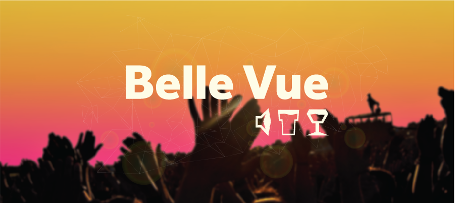
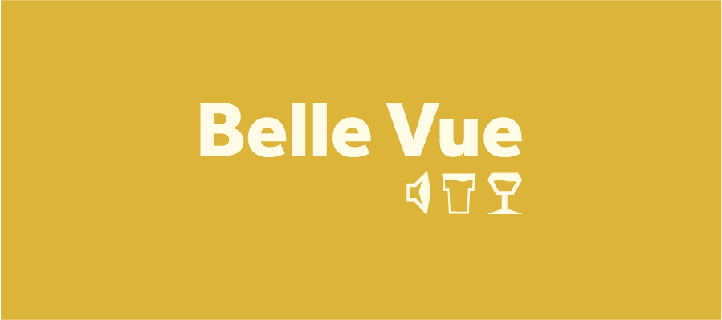
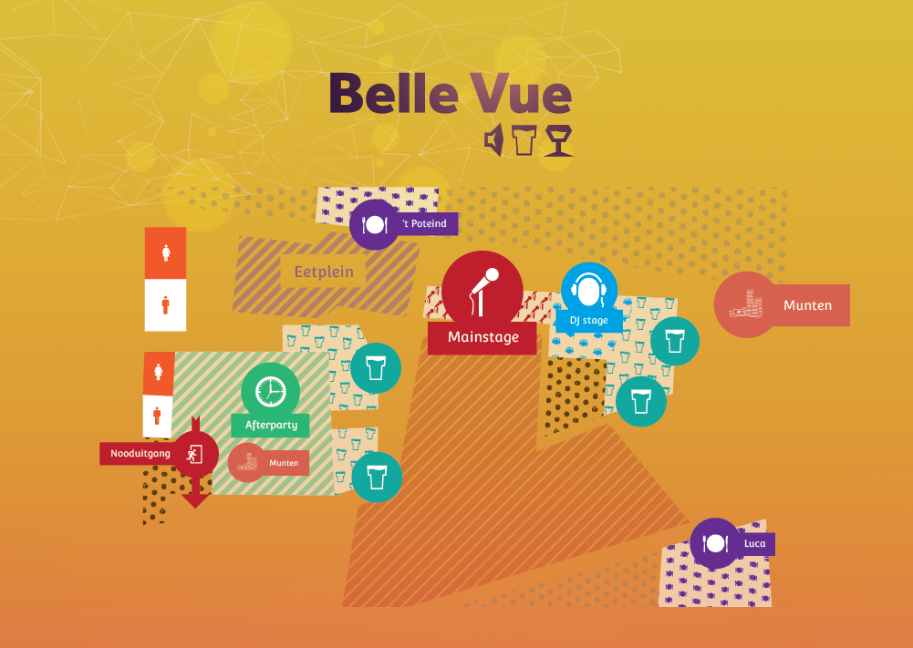

Belle Vue Festival
Het Belle Vue Festival wordt tweemaal per jaar in Zundert georganiseerd. Beide edities duren 2 dagen, waarvan de eerste editie zich afspeelt tijdens de Aardbeienfeesten en de tweede tijdens Corso Zundert.
Huisstijl
Festival Belle Vue was op zoek naar een unieke, herkenbare huisstijl welke gemakkelijk doorgevoerd kon worden naar zowel online en offline media. Het gebruik van een fris kleurenpallet, een groot contrast en uitgesproken kleuren draagt dan ook sterk bij aan de herkenbaarheid.
Media
Naast het verspreiden van posters, wordt met name Facebook ingezet om de doelgroep te bereiken. Drukwerk moet dus zowel op een poster als op een klein smartphonescherm goed tot zijn recht komen.
Skills
About me
| Name | Lesley Christian Duyndam |
| Address | Professor Verbernelaan 112-06 |
| Zip code | 5037AK |
| City | Tilburg |
| Date of birth | 10-03-1989 |
| Birthplace | Rotterdam, The Netherlands |
| Mobile Phone | +316 4546 0121 |
| lesleyduyndam@gmail.com | |
| facebook.com/lesley.duyndam |
Education
| 2001 - 2005 |
Mencia SandrodeZundertVMBO |
| 2005-2009 |
De Rooi PannenBredaMBO | Hotel ondernemer/manager |
| 2009 - now |
Fontys ACITilburgHBO | CO-IEMES |
Work
| 2005 - 2008 |
Restaurant Kir RoyalSchijfService |
| 2008 - now |
Cafe Den BelsZundertService & Promotions |
| 2013 | Project based |
About Plants B.V.WernhoutWebdesign & Promotions |
Internships
| 2008 |
Amathus Beach HotelLimassol, CyprusService |
| 2009 |
WTC RotterdamRotterdamService |
| 2013 |
Stichting DonckhuysDongenCommunication |